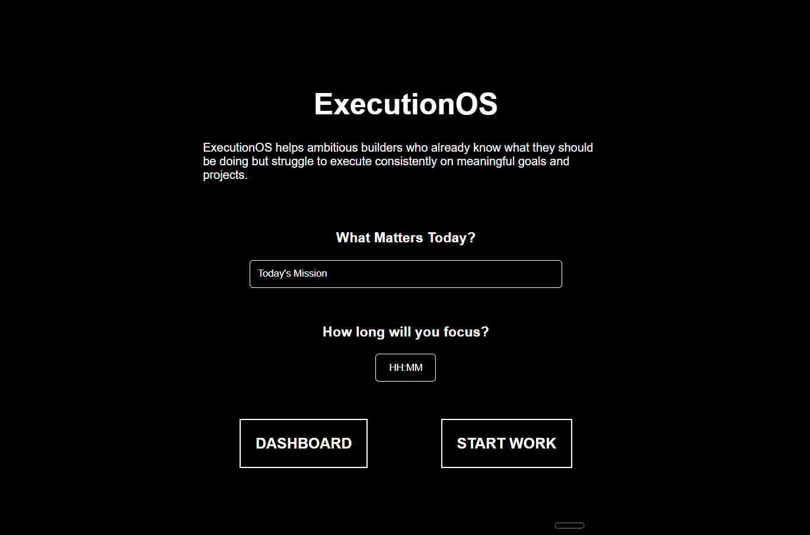
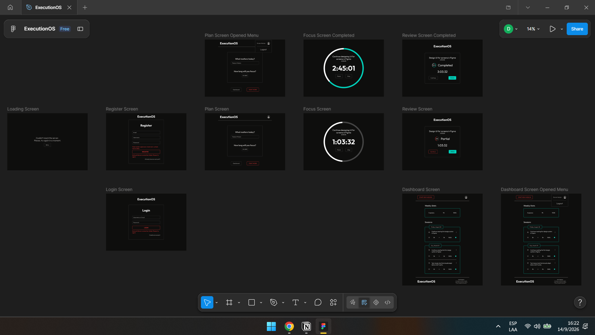

v0.1 — Core MVP
Plan → Focus → Review.
I build products end to end, from the problem and product decisions to UI, frontend, backend, databases, authentication, debugging, and deployment.
Helps people be consistent with deep work by making execution visible and rewarding. I built it end to end to solve my own problem: inconsistency with execution over defined plans.
The idea was to build a product that tracks deep work time and makes consistency visible in a way that rewards the user for continuing. It also became a way for me to learn how to build software products that help people improve.
I built the first frontend MVP in two weeks using HTML, CSS, and JavaScript. At that point, persistence was only a local JSON file.
After using it myself for about a month, I wanted multiple users to be able to use it. I did not know how to build account systems or store multiple users' data, so instead of learning backend development separately, I learned the concepts I needed and immediately applied them to ExecutionOS.
Once the app supported multiple users, the core experience did not meet my minimum quality bar. I learned enough Figma, UI design, and prototyping to redesign the screens, then translated those designs directly into the shipped product.


Plan → Focus → Review.
Added backend persistence and visibility into completed work.
Accounts, user-owned sessions, deletion, and completed core UI.
Redesigned and polished the full core experience for production.
JWT authentication · SQLAlchemy · Netlify · Render
Local persistence was enough at first, but supporting multiple users changed the requirements. I moved the product to a database-backed model.
Render's filesystem could not be trusted for persistent production data across redeploys, so I separated persistence from the backend deployment.
I chose a short-lived access token plus a long-lived refresh token. The access token stays in memory, the refresh token lives in an HttpOnly cookie, and the client refreshes access transparently when needed. A token-version field prevents future refreshes after logout.
I identified that trusting a client-provided user_id would let a client request
another user's data. I moved identity into verified JWT claims instead.
I had to combine short-lived access tokens with persistent login, decide where each token should live, handle cross-origin cookies, refresh and retry failed requests automatically, and make logout invalidate future refreshes.
I chose this flow instead of a timer ↔ dashboard loop because each screen should have one clear purpose. The user should always know what they are supposed to do next.
Users should not be able to modify completed work time after a session finishes. The constraint protects the accountability of the record.
The user defines intended work before starting. Planning happens first, so the focus session can be about execution instead of repeatedly deciding what to do.
I’m deeply interested in self improvement, fitness, and building products that help people grow. I worked at a gym for months to buy the computer I now use to build ExecutionOS, a product born from my own struggle with consistency. I want to help people get better and grow every day by first doing it myself.